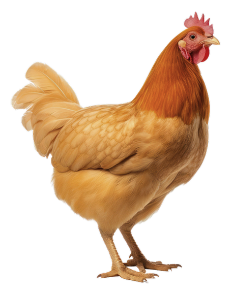
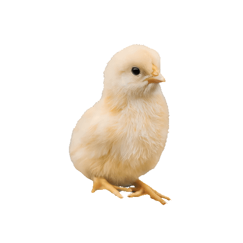
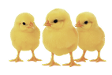

신선함의 비밀을 엿보다
-
진짜 맛있는 닭고기의 비밀이
무엇인지 알고 계신가요?
-
정답은 바로
신선함 입니다.
하지만 진짜 신선함은 무엇일까요?
1978년부터 45년 간 오직 ‘신선함'
하나만을 위해 지켜온 하림만의
놀라운 비밀을 발견해 보세요!
Let's Begin the Journey
-
HANDS
ON TOUR
-
손 끝으로 발견하는
진짜 신선함의 비밀

Unlock the Secret


- STEP 1
-
좋은 닭고기는
건강한 사육에서
시작됩니다.
- 사육 시스템
-
우리가 먹는 닭고기인 육계부터
그 부모인 종계, 조부모인 원종계, 그리고
종란에서 병아리가 태어나는 부화단계
까지 하림은 사육 전 과정을 하나하나
꼼꼼히 관리하며 건강한 닭을 키웁니다.
- 사육환경
-
닭에게도 맞춤 케어가 필요해요.
온도, 습도는 기본!
영양 밸런스까지 고려해 사료도 직접 제조해요.
잘 먹고, 잘 자란 닭만을 키우니까요.
- 사육 시스템
-
우리가 먹는 닭고기인 육계부터
그 부모인 종계, 조부모인 원종계, 그리고
종란에서 병아리가 태어나는 부화단계
까지 하림은 사육 전 과정을 하나하나
꼼꼼히 관리하며 건강한 닭을 키웁니다.
- 사육환경
-
닭에게도 맞춤 케어가 필요해요.
온도, 습도는 기본!
영양 밸런스까지 고려해 사료도 직접 제조해요.
잘 먹고, 잘 자란 닭만을 키우니까요.
QUIZ
-
더 신선한 닭고기는
어느 쪽 일까요?
-
닭고기의 표면을 비교해서
정답을 맞춰보세요.